Parts define the type of information that will be printed down the report. Each part contains a specific type of information, such as text headings, company logo, particular accounts or ranges of accounts. There are twenty-two possible part types from which to choose.
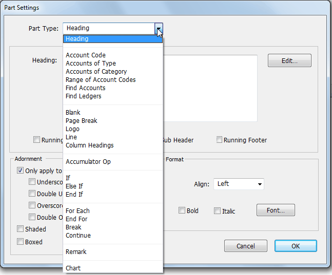
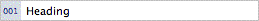
A heading part will print a single line of text. This information can be text that is typed directly into the Heading edit box, or a formula which includes one or more report variables containing the information you want to print such as NAME to identify the company name. The formula can also be used to combine literal text and report variables.
Tip: In a calculated heading, use the meta-character “\t” as a tab character to align components of the heading with individual report columns, e.g.
=”Column1\tColumn2\tColumn3”
The report variables describing the gestalt (i.e. the conditions under which the report is being printed) for the report are listed below (a full set of system variables in listed in the Calculations section:
Company Details:
Information from Show>Company Details
Name the company name
Address1 ... Address4 four fields each being one line of the postal address State the state/province of the postal address
PostCode the postcode for the postal address
Delivery1 ... Delivery4 four fields each being one line of the delivery address DeliveryPostcode the postcode of the delivery address
DeliveryState the state/province of the delivery address
Phone the telephone number
Mobile the mobile phone number
Fax the fax number
Email the electronic mail address
GstNum the company's GST/VAT/ABN number
RegNum the company's IRD/ACN/IRS number
TaxName the name of the local primary tax (GST, VAT, TAX)
WebURL the URL of your website; if this is a complete URL (i.e. includes the http://) it will be hot-linked to your website in pdf reports and forms
RemittanceMessage text to appear on invoices and statements for direct credit details
GST/VAT/Tax cycle and MoneyWorks Environment
GstCycleEndDate The date the current GST ends on
GstCycleNum the current GST Cycle number
GstIncomeInvoiceBasis True if GST reporting is set to invoice basis for income GstExpenseInvoiceBasis True if GST reporting is set to invoice for expenses Version The version of the MoneyWorks that is being used Formatting
LinesLeft the approximate number of lines left on the current page. This will not be correct if cells in subsequent parts use word wrap, or if you subsequently change the running footer
Report Period:
Variables that apply to the period for which the report is being printed, as selected in the period pop-up menu when the report is run
Period The name of the current period for which the report is being printed.
PerEnd The last day in the report period as text, e.g. “30 June 2007”
PerEndDate Same as PerEnd, but as a date.
PeriodNames A comma separated list of period names
PeriodNum The internal period number of the report2
PeriodsInYear The number of periods in the financial year
YearEnd The date of the last day of your financial year as text. Since the last period for the financial year may not be
open, MoneyWorks guesses this by looking at the end date for the last period of the previous financial year.
YearEndDate Same as YearEnd, but as a date.
StartupSequenceNumProduct StartupSequenceNumUser
all transactions entered since the current user logged in.
Columns:
Variables used to determine information for a report column. Variables referencing periods are valid only if there is a well-defined period for the column.
ColID The ID of the column (i.e. what you called the column in the Ident field of the column settings).
ColPer The name of the period for which the report column is printing
ColYear the name of the financial year for which the report column is printing
ColPerNum the internal period number of the column
Report Settings:
Variables that are set by the user when the report is run
Omit_Zero_Balances 1 if the Omit Zero Balances option is set, otherwise zero Include_Unposted 1 if the Include Unposted option is set, otherwise zero Show_Departments 1 if the Show Departments option is set, otherwise zero Print_Movements 1 if the Print Movements option is set, otherwise zero Cash_Basis 1 if the Cash Basis option is set, otherwise zero
BreakDown Where you are printing a breakdown of accounts this field gives the type of breakdown: “Category”, “Department”, “Classification” or “Depts in Group”.
Scope the name of the particular category, department, classification or departmental group printed in this area of the breakdown.
ScopeCode the code of the particular category, department, classification or departmental group printed in this area of the breakdown.
Sort_By The setting of the Sort By menu. Account Code is 1, Accountants Code is 2 and Description is 3. All other settings are 1
SubSummary:
Variables that reflect the SubSummary settings when the report is run SubSummaryScopeCode current breakdown code in a subsummary SubSummaryScopeDesc description corresponding to current breakdown code SubSummaryHeadingLevel 1 (lowest) to 5 (highest), or 0 if not emitting a
subsummary heading
SubSummaryTotalLevel 1 (lowest) to 5 (highest), or 0 if not emitting a
subsummary total
Enter the fields into the Heading part using an equals sign. For example, to include the company name you would use:
=NAME
Use the plus sign to add these variables to other text—literal text should be enclosed in double quotation marks:
e.g: ="Phone" + Phone =ADDRESS1 + ", " + ADDRESS2 ="Income and Expense Report for " + PERIOD
For more information see You use calculation formulæ in many different places in MoneyWorks.
Used to include information for a specific account code. Enter the desired account code or pattern into the Code box.
Account Code Patterns: You can also use the wildcard characters “@” and “?” to get a range of accounts based on account code.
Use a question mark to denote that any single character is an acceptable match. Use an @ at the end of the account code or at the end of the department code to match any sequence of zero or more characters or use @ on its own to match all account codes.
For example, the pattern “?10?-A@” will match all departmentalised accounts having a department beginning with “A” (only sub-ledgers with a department beginning with “A” will be included) and having a four-digit account code with a “1” in the second place and a “0” in the third place (E.g. 0100-ART, 1105-ADM, 2100-ACRIM, 3107-AM, etc. will be included;
1010-ADM, 210-AM, 0100-BOT, 5100 etc. will not be included).
SequenceNumber: StartupSequenceNumTransaction StartupSequenceNumName StartupSequenceNumJob StartupSequenceNumJobSheet
The next sequence number for each of the files at the start of the session (i.e. file opened in single user mode, or client logged in). Can be used to implement session filters or reports. For example, SequenceNumber >= StartupSequenceNumTransaction would find
Used to include information from all accounts of a specific type—all income or bank accounts for example. The type is selected from the pop-up menu which appears when you choose this option.
Sometimes the apparent type of an account can change (e.g. your cheque account is no longer an asset if it is overdrawn).
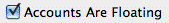
If you set the Accounts are Floating option for the Part, accounts from the “other side of the ledger” will also be included in this Part if they have aninappropriate balance. Note that, for reports spanning more than one period, one account may appear in two places if it has a debit balance in one period and a credit in another. The floating account types are:
| Type Code |
|
|
|---|---|---|
| SA |
|
|
| CS |
|
|
| IN |
|
|
| EX |
|
|
| CA |
|
|
| TA |
|
|
| CL |
|
|
| TL |
|
|
In addition, you can use range of accounts “Sales and Income” (which combines types of IN and SA), and “Cost of Sales and Expenses” (combining types of CS and EX). Each floats to the other.
Used to include information for accounts of a specific category. Type the category code into the edit box which appears when you choose this option.
Category Code Patterns You can also use the wildcard character to specify a range of categories that share a common first letter(s) e.g. “SA@”.
Used to include information for accounts whose codes fall within a nominated range. Type the starting code into the From box and the finishing code into the To box which appear when you choose this option.
You can use the wildcard characters to specify a range of departments within accounts. For example, if you specify a range from “1000-A@” to “1000-D@”, you will get all sub-ledgers of account 1000 having a department beginning with A, B, C or D.
Used to find a specified range of accounts. The range is determined by a search expression—this is a standard MoneyWorks search expression that can be typed in directly or constructed using the Find by Formula window that is opened when the Edit button is pressed.
The Find Ledgers part operates like the Find Accounts part, except it operates on the Ledger file instead of the Account file. The Ledger file has a many to one relationship with the Accounts file. For departmentalised accounts, there is one ledger record for each department for an account. You can find Ledger records for particular departments or classifications.
Inserts a blank line into the report.
Inserts a page break between sections of the report. It is good practice to end each report with a page break. If you then print the report with a breakdown (by department for example), each breakdown will print on a new page.
If you have placed a copy of your logo into the Company Details dialog box, you can include this logo in the report layout. If there is no logo and you include this part, the company name is used and can be formatted using the Font options.
Tip: You can also put your company logo in a report cell whose Display is set to Product Image, and the Value is "Builtin:CompanyLogo" (without the quotes).
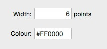
Inserts a solid line into the report. The line goes right across the page.The thickness (width) and colour of the line can be set in the
corresponding fields. Colours are specified as 24 bit RGB colour format, similar to HTML colours (0 is black). These are easily expressed as hexadecimal values, a # followed by six characters. For example #FF0000 is red.
Inserts a line of column headings. The heading for a column is determined by the text or formula in the column Heading field.
Accumulators provide a mechanism to calculate cumulative totals of the raw information contained in the report. An accumulator is an array of variables, one for each numeric column in the report.
When an accumulator is activated, any subsequent report parts that involve account balances, budgets or column calculations will be automatically totalled into the accumulator. In addition, a count of the number of values accumulated, (i.e. number of parts by number of accumulatable columns, including cell overrides) is maintained in AccumulatorName.Count. When the accumulator is deactivated it retains any values that it has accumulated. These values are unaffected by any subsequent parts until the accumulator is reactivated.
The values that are added to the accumulator are the raw (unadjusted) column values for all numeric columns. Debit balances will increase the accumulator values and credit balances will decrease them.
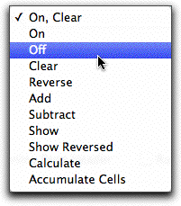
It is possible to have more than one accumulator in a report—hence the need to name an accumulator as you activate it. Specify the accumulator by name when you use it again in the report.Use the Accumulator options pop-up menu to activate, print or deactivate a named accumulator. There are nine operations that affect accumulators. In using these operators the name of the affected accumulator must always be specified.
On, Clear: Activates the named accumulator and sets its values to zero.
As accumulators are not cleared across report chains, for breakdowns or for multiple periods, this is the preferred method of activating new accumulators. Otherwise the data is carried from one segment of the report to another.
On: Activates the named accumulator. If this is the first appearance of the accumulator in the report, its values will be initialised to zero.
Off: Deactivates the named accumulator.
Clear: Resets the named accumulator to zero, allowing you to use an accumulator to total one range of accounts, clear it and then reuse it for another.
Reverse: Reverses the sign of the named accumulator, so that debits become credits and vice versa.
Add: Adds the values in one accumulator to another accumulator.
Enter the appropriate accumulator names into the edit boxes. This operation changes the values of the accumulator named in the second box.
Subtract: Subtract the values in one accumulator from another.
Enter the appropriate accumulator names into the edit boxes. This operation changes the values of the accumulator named in the second box.
Show: Prints the values in the specified accumulator.
Nothing is printed in the non-numeric columns. If you want a heading to be shown somewhere on the same line as the accumulator values are printed, use a Cell to place the text in the desired column.
Show Reversed: Equivalent to the Show operation, except that each item in the accumulator is shown with a reversed sign. The actual values in the accumulator are not affected.
Calculate: Used to apply calculations on Accumulators. Specify the calculation in the field supplied, or click the Edit button to bring up the standard calculation editor. The calculation result is put in the named Accumulator.
Note that you can use other accumulators in the calculation, or individual elements from within an accumulator (e.g. TOTAL.COL3).
Accumulate Cells: Adds the cell calculations on the part into the nominated accumulator. This is independent of the “Cell value gets added to active accumulator” cell setting. Note that the nominated accumulator does not have to be active.
The If ... Else if ... End if parts are used to specify conditional output. The expression in the If statement is evaluated when the report is run, and if it is true the parts up to the corresponding Else part are output. If the expression is false, the parts between the If and its corresponding Else or End if are skipped.
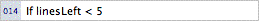
The If part is use to specify the expression to be tested. Enter this in the field supplied, or click the Edit button to bring up the standard calculation editor window. The expression should evaluate to true or false (or if numeric, 0 is false, anything else is true). There must be a corresponding End if part for each If part.
Note: If parts can be nested within other If parts up to nine levels deep.
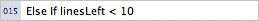
The Else If part marks the end of the true part of an If section in a report, and hence can only be used if there is a preceding If part. You only need to have this part if there is an alternative to the If, and it will only be evaluated if the preceding If parts (or Else If parts for a compound statement) evaluate to false.
An optional expression can be specified as part of the Else if part. If this expression is present, the subsequent parts (down to the next Else if or End if part) will only be output if the expression evaluates to true. If the expression is omitted, the subsequent parts down to the associated <EquationVariables>End if</EquationVariables> are output regardless.
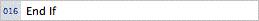
The End if part must be used to mark the end of an If block.
The For Each ... End For is used to loop through either (a) the elements in a comma-delimited text string, (b) lines in a newline-delimited table, (c) an integer series, or (d) the selected records found by a search expression from one of the MoneyWorks tables. The loop is traversed once for each item list, or each record found in the order of the specified sort, e.g. the following will step through each transaction entered today, in the ordered entered (SequenceNumber):
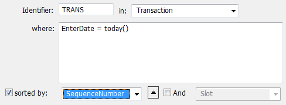
Every For Each part must be terminated by an End For part.
Identifier: A name by which to reference the fields of records of the nominated list. Thus to get the transaction date of the record in the above example, you would use “TRANS.TransDate”.
In: A comma-separated list of values, an integer series, or a MoneyWorks List (table) selected from the pop-up menu.
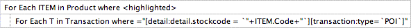
the first For loop steps through every highlighted product; the second loop finds every detail line involving the product, then uses a relational find to locate every outstanding purchase order containing those lines.
Note: The special test string (optionally followed by a platform
For each COUNTRY in "NZ,USA,CAN"
file://
Comma-separated: Loops with COUNTRY = “NZ”, “USA”, “CAN”
For each NUM in 1...5
Integer series: Loops with NUM = 1, 2, 3, 4, 5
Note: For series involving variables, you will need to enter the loop parameters as a calculation, e.g. to step through each available period:
PER ="1..."+PeriodToNum(CurrentPer)
Parsing of "..." for a range can be disabled by turning off the Parse "number...number" as a numeric range for the loop checkbox. You should do this if iterating over user-supplied data such as the contents of a file. Parsing for a numeric range will also not happen if the data is more than 30 bytes long, or contains non-numeric characters.
Note: When looping through Categories, Departments or Classifications, Account parts (e.g. Accounts of Type) within the loop are automatically filtered to show only accounts/ledgers that match the current for-loop value.
Where: A search expression, normally involving fields from the nominated list, relational find, or pre-calculated selection. If no search is specified, the highlighted records in the list will be used (or all records if the list has not been opened). Click the Edit button to open the Calculation window.
Examples:
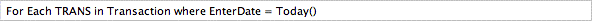
steps through every incomplete (unpaid) debtor invoice
specific file path) can be used to read and step through the records in a text file. If the file cannot be located, the standard File Open dialog will be displayed, allowing you to choose the file. For example
file://Users/Accounts/Documents/SupplierX/priceList.txt
will (on a Mac) open the priceList.txt file if it exists, otherwise the file open dialog will be displayed. To access a text file hosted on a web site, specify the URL to the file (e.g. http://www.somewhere.co/somefile.txt)
Note: If you want your report to run on the server, do not use
<highlighted>. Instead precalculate the selection in an invisible control.
List: When stepping through the records of a tab or newline delimited list, the list to use. This can be a calculated result (preceded by =).
Sorted by: The field from the modified list by which to sort the records. Using the And option to provide another level of sort.
The Break part is used to prematurely terminate the processing of a For Each ... End For loop. When encountered, the next part of the report to be output will be that following the enclosing End For part. For this reason the Break part will normally be enclosed in If ... End If parts.
The Continue part is used to terminate the current iteration of a For Each ... End For loop. The report will continue from the top of the enclosing For Each part, using the next value in the list that meets the Where criterion. The Continue
part will normally be enclosed in If ... End If parts.
Required to terminate a For Each loop.
The Remark part is primarily intended for internal report documentation and is not printed when the report is run. It is good practice to put remarks into your report to make them easier to understand later on.
Note that cells in Remark parts are evaluated, allowing you to calculate intermediate values without them being printed.
Use the Chart part to display a simple chart or graph in your report. This will take up the full width of the page; smaller charts can be created within cells.
Table Text: The data to use to generate the chart. This needs to be a table of tab-delimited values, with each row separated by a new line. The first row
contains the column headings (which will constitute the key on the chart—if all values are empty, no key will be produced), the first column contains the x-axis headings. For textual data, the tab character can be represented as “\t”, and the newline as “\n”.Thus the following table:
|
|
|
|
|---|---|---|---|
| Jan |
|
|
|
| Feb |
|
|
|
| Mar |
|
|
|
| Apr |
|
|
|
could be represented by the following in the Table Text field:
="tBLOGGS\tJONES\tWHITE\nJan\t33\t54\t77\nFeb\t66\t78\t56\n Mar\t87\t6\t56\nApr\t56\t45\t87\n"
In practice you will probably want to build your table at report time based on the data in your MoneyWorks file. Useful functions for doing this are Analyse, Dice, Head, Slice, Sort, TableFind, TableAccumulate, Transpose. You can also use the For Each ... End For loop to step through selected records and build up the table text in a cell variable.
Type: Sets the chart type. The diagram below has examples based on above data
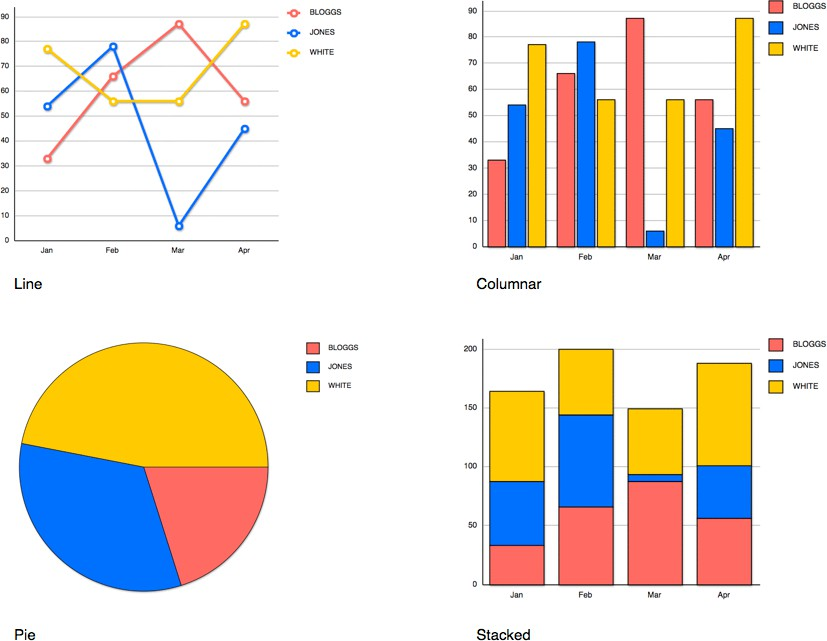
Note that Pie graphs only reasonably display a single column of data. The above was done by using the Head function to take the first two rows (the first being a heading), then converting this into a column using the Transpose function.
Individual columns can override the chart type setting by appending the column label with “|x”, where”|” is the “pipe” character and x is one of:
C Column with black border c Column with no border
S Stacked
Line with data points
I Line with no data points (lower case L) P Pie (useful for only one column)
9-month moving average
Mn n-month moving average, where n is 1..9
The “|x” text will be removed from the label and not appear on the chart.Thus
"\tBLOGGS|S\tJONES|S\tWHITE|S\nJan\ ..."
will force a stacked column graph, regardless of the Type setting in the report part. More interestingly, in:
"\tBLOGGS|S\tJONES|S\tWHITE|L\nJan\ ..."
the “|L” in the WHITE label generates a line graph, giving a composite graph:
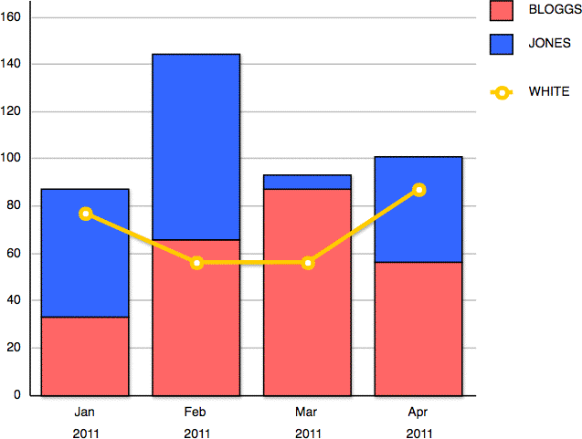
A colon in a column label will split the label into two lines, allowing (for example) the month and year name to be on separate lines, as shown above, where the month labels were changed to end in “:2011”:
"Jan:2011\t33\t54\t77\nFeb:2011\t..."
etc:
You can get category divisions by only including the “:division” part for the first category of each division. The “division” label will be cunningly centred under its related categories. If there are too many categories to fit, only the division labels will show.
Running headers and footers can be created by setting the appropriate header/ footer options in the part(s) you want to constitute the header/footer.
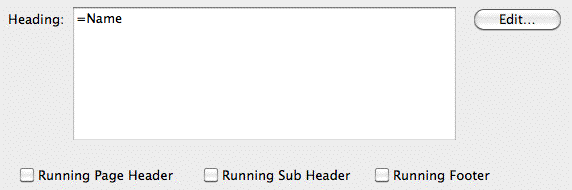
Not all parts can be used in a header/footer—it makes no sense for example to have a page break or a range of accounts in a header/footer.
Header, subheader and footer definitions show in the report editor window with labels and (respectively) dark grey, light grey and diagonal-stripe bars, as shown.
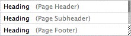
You can define a running header using the Running Page Header or Running Sub Header check boxes. All contiguous parts with the same header setting will form a running header of the designated type.
Each subsequent new page generated following the definition of a running header will result in the header parts being emitted: first the Page Header (if any), then the Sub Header.
The Page Header is likely to be used for a global header at the top of every page of a report; the Sub Header is likely to be redefined at the start of sections needing a header repeated in the event of a page break (column headings, typically).
Any part that has a Running Page/Sub Header check box set that is not immediately preceded by a part with the same check box also set will be taken to denote the start of a fresh definition of the header—the old header definition will be discarded.
To cancel a running header entirely, define a new Header using just a Remark part (technically, you still have a running header, but it won't print anything).
Column Headings at Top: Automatically adds headings for the fields in the columns in this part above the first row of data. The text for these headings comes from the Heading field in the Column Settings for each column.
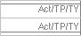
Column Headings After Page Breaks: If this is set, the column headings will be printed at the top of each new page (but after the running header), should the part encompass more than one page.Totals at Bottom: Automatically adds totals for each of the columns of numeric data at the bottom of the part. The totals appear under a line.
Footers are defined in the same way as Headers, except the parts constituting
When these options are checked, a line appears at the top of the part to indicate the presence of headings and at the base of the part to show that totals are on.
For ranges of accounts that have the Totals At Bottom option
The lines at the top
and bottom of the first part indicate headings and totals respectively.
the Footer definition do not print at the position they appear in the report: Rather they will be emitted whenever a page break is about to occur. Thus the footer will appear at the bottom of each page. As with headers, you can cancel a footer by redefining the footer as just a Remark part, which does not print.
Since footers need to be a known number of lines high, don't use a word- wrapped cell on a footer—it may spill onto the next page.
There are several options that apply to parts which involve some sort of range of accounts (e.g. account code, accounts of category, accounts of type). These determine how much information is printed for the part.
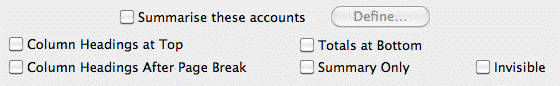
Summarise these accounts: Set this option if you want to pre-define a subsummary for this part. A subsummary attached to a part overrides any subsummary that may be applied globally.
set, a Subsummary applied to the range will generate a grand total as well as subtotals for each breakdown level. The grand total will not have a caption.
If you want a captioned grand total, you should not use the Totals At Bottom option but should generate your own total using an accumulator. You can caption this in the usual way using a cell.
Summary Only: Prints only the totals for the range of accounts, not the individual accounts in the range.
Invisible: Suppresses printout of the part. This is useful if you want to accumulate data into an accumulator without it being printed—for example you may want a line in your report that reports on profit, without showing the actual income and expense lines.
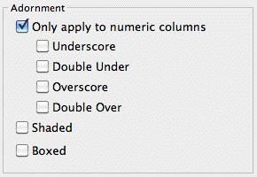
Use the adornment features to underline, overscore or shade the part as it prints out. If the Apply only to numeric columns option is set, the adornment will not appear on columns such as description and account code.
The Boxed option places a box right around each line in the part.
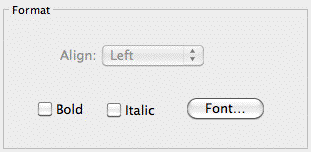
The Format options are used to set the font, style and alignment for the part:
The font attributes for a part are set by the Font button, which opens the font settings window —see Modifying the Report. The selected font will apply to all elements in the part unless overridden by the attributes of a cell in the part.
Tip If you just want to change the style for a portion of the report, put a cell formula over the portion that you want to change see Report Cells. Make the desired format, colour and style adjustments using the Font button in the Cell Settings window, and give the cell a formula of just “=” (omitting the quote), as shown below
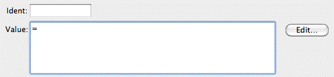
Note: Remember that whatever computer runs the report (including the Datacentre server for server-side reports) will need to have the fonts installed.
Columns specify what data from the accounts will be printed in the report. For account and ledger parts, and unless overridden by a cell calculation, each column contains one specific type of information such as the account code, description, or actual account balances or budgets.
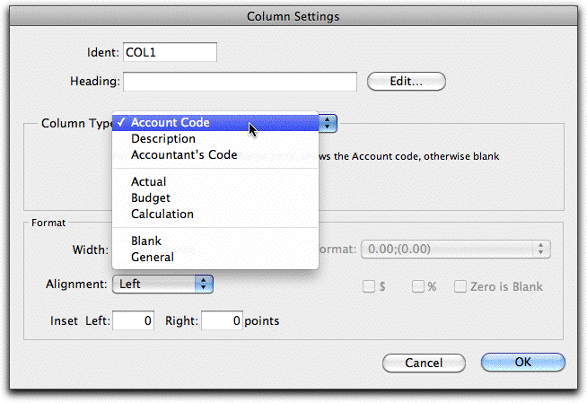
This is how you can identify the column in other column or cell calculations. A default identifier name is supplied whenever a column is created. You don’t need to change this, but if you do you should ensure that you use a name that is not already used in another column of the report.
The text in the heading is printed on the report whenever a column heading is printed (printing the heading is done by the Column Headings report Part, or by the various column headings Part options). This will normally be just text, but full expressions and report variables can be used in column headings. Clicking Edit will open the Calculation window, enabling the easy entry of expressions.
To use a variable in a column heading, the heading must start with an equals operator, e.g.
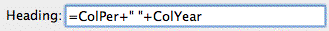
will result in a column heading of the form:
Nov 2007/08
The variables Colper and ColYear show respectively the period name and the year name to which the column corresponds.
The type of column is chosen from the Column Type pop-up menu. This determines what will print in that column for any part involving accounts or accumulators. There are six possible types to choose from
Account Code: Prints the code for each account or range of accounts in the part.
Description: The text description for the account code.
Accountant’s Code: The value in the Accountant’s Code field for the account.
Actual: An actual (as opposed to budget) value from the general ledger.
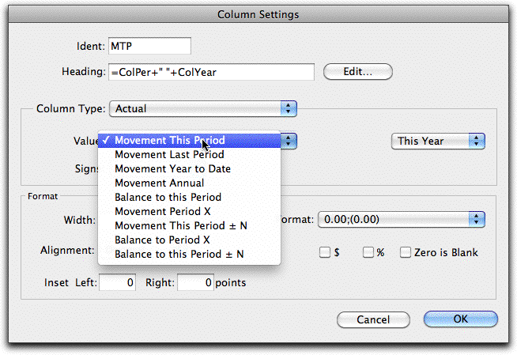
The information extracted for the report depends upon the value of the For pop-up menu. These are detailed in the following table where report period refers to the accounting period for which the report is being printed (this is selected when the report is printed). The financial year for which the information is extracted is determined by the right hand pop-up menu.
|
|
|
|---|---|---|
| Movement |
|
|
| This Period |
|
|
|
|
|
|
|
|
|
|
|
|
||
| Movement |
|
|
| Last Period |
|
|
|
|
|
|
|
|
|
|
|
| Movement |
|
|
| Year to Date |
|
|
|
|
|
|
|
|
|
||
|
||
| Movement |
|
|
| Annual |
|
|
|
|
|
|
|
|
|
|
|
|
|
|
| Balance To |
|
|
| this Period |
|
|
Movement Period X
Movement This Period
±N
Balance to Period X
Movement This Period
±N
The movement for the account in the designated period (selected from the pop-up menu) for the current year. The period will not change regardless of the report period. If the period is not open and the Budgets Report Preference option is set, the A budget will be printed.
The movement for the account in a period relative to the report period. The number of periods preceding or following is entered. Negative values are for prior periods, and positive for subsequent periods. For example, -3 represents 3 periods prior, and 1 represents the following period. If the period has not been opened and the Budgets Report Preference option is set, the A budget will be printed.
The balance for the account in the designated period (selected from the pop-up menu) for the current year. The period will not change regardless of the periods setting when the report is printed.
The balance for the account in a period relative to the report period. The number of periods preceding or following is entered. Negative values
the report period.
The movement for the account in the designated period (selected from the pop-up menu) for the previous year. The period will not change regardless of the period.
As for this year, except relative to the period last year.
The balance for the account in the designated period (selected from the pop-up menu) for the previous year. The period will not change regardless of the periods setting when the report is printed.
As for this year, except relative to the period last year.
Reversed: Debit balances will be printed as negative; credit balances as positive.
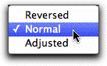
Normal:Debit balances will be printed as positive; credit balances as negative.
Adjusted: Debit balances in accounts of type Income, Shareholders Funds, Current Liability and Term Liability will be printed as negative, credits as positive. For other account types they are treated as normal. You will need to use Adjusted in a Profit and Loss report. Otherwise the income account balances will be displayed as negative values (because they will normally be credits).
By default, this is the account A budget for the period for the report period. The Budget to use (A Budget or B Budget) is selected from the A/B pop-up menu.
Budgets can be printed for the current year, the previous year, or the next year.
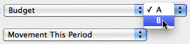
This Year Last Year
are for prior periods, and positive for subsequent periods
Future Values Using the Movement Period X and Movement This Period ±N options, it is possible to refer to general ledger movements that do not yet exist because the period is not yet open. These will print as zero unless a Budget option has been set in the Report Prefs, in which case figures from the A or B budgets (as specified) will be used instead.
Movement This Period
Movement Last Period
Movement Year to Date
Movement Annual
The budget for the account in the report period.
The budget for the period prior to the report one.
The budget for the account for all periods from the beginning of the year to the end of the report period.
The annual budget for the account for the entire year. This is the sum of all of the period budgets for the year
The budget for the account in the period one financial year before/after the report period.
The budget for the period one year before/after the previous report period.
The budget for the account for all periods from the beginning of last/next year to the end of the period one year before/after the report period.
The annual budget for the account for last/next year.
Use the Signs pop-up menu to control the way that account information is
Balance To this Period
Not available. Not available.
printed. For Profit and Loss type reports the signs should normally be set to
Adjusted; for Balance Sheet type reports, they should be set to Normal.
Movement Period X
The budget for the account in the period designated by the period pop-up menu in the current financial year.
The budget for the account in the period designated by the period pop-up menu in the previous/next financial year.
Movement This Period
The budget for the account in the period relative to the report period in
The budget for the account in the period relative to the report period in
Accum. Behaviour: Determines how the calculation is applied to accumulators.
±N the current financial year. the previous/next financial year. Balance to Not available. Not available.
Period X
Note: If you have only specified annual budgets (by entering the annual budget into the first period of the financial year), then you will (not surprisingly) get this value for the Movement This Period budget value for that period, and zero for all the rest.
The calculation option allows you to specify a calculation that may involve other columns or fields. The calculation is specified in the Calculation field, or you can use the Edit button for the full Calculation entry window.
Note: If you open a calculation column that was created in ancient versions of MoneyWorks, you will get the limited calculations options that were then available. This is for backward compatibility only, and will remain unless you use the Edit button.
You can access a particular column of an accumulator and use it as a base for calculating percentages by putting a reference to it of the form:
Apply Formula to Accumulator: The formula is applied to the accumulated totals. You will typically use this option when you are calculating percentage differences across columns.
Accumulate Calculated Values: The result of each calculation is accumulated. This will give the same result as the Apply Formula to Accumulator option provided the calculation involves only addition and subtraction.
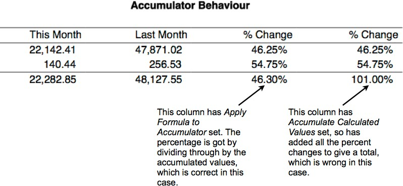
For an example of this, see the right hand column of the Profit Monthly report, which uses the reference PCT.COL6 to show income and expenditure as a percent of total income.
<Accumulator Name>.<Column Name>
Note: For calculations not returning a number, set the format to Non-numeric.
Note: Since there is no guarantee that an accumulator will exist for the entirety of the report (it’s not created until it is used in a part), the syntax check for a column calculation will give an “unknown identifier” warning when you use an accumulator.column in a column calculation. So long as the accumulator you use in the calculation gets created before any account parts that will cause the column calculation to be evaluated, this won't be a problem - just ignore the warning.
A Blank column displays nothing. Use this for formatting your report. Numeric ell calculations in blank columns are not (by default) accumulated into active accumulators, and nor do accumulator totals show in a Blank column.
Similar to Blank columns, but numeric cell calculations are accumulated by default, and accumulator totals are displayed. General is the default column type for new columns.
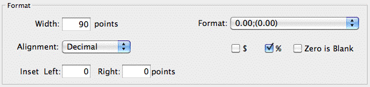
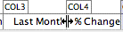
Individual columns can be formatted using the Column Format options:
Format
Use the format option to specify the format in which numeric values should be printed. The pop-up menu provides examples of the format for positive and negative numbers. Zero balances always print with positive number formatting. Calculations resulting in zero print with the formatting for the sign of the result (which may be positive or -ve zero).
The format options are as follows (the two right hand columns are the format constant name and number, either of which can be used as parameters to functions such as TextToNum):
| Positive as |
|
|
|
|
|---|---|---|---|---|
| Non- Numeric |
|
|
||
| 0 |
|
|
|
|
| 0.00 |
|
|
|
|
| 0 |
|
|
|
|
| 0.00 |
|
|
|
|
| 0 DB |
|
|
|
|
| 0.00 DB |
|
|
|
|
| 0 |
|
|
|
|
| 0.00 |
|
|
|
|
| 0.000 |
|
|
|
|
| 0.######## |
|
|
|
|
| 0.## |
|
|
|
|
| 0.#### |
|
|
|
|
| 0.00## |
|
|
|
|
| 0.0000 |
|
|
|
|
| 0.0 |
|
|
|
|
| 0.000000 |
|
|
|
|
Use this to explicitly set the width of the column. Column widths can also be altered by dragging the right-hand column
Changing a column width
boundary in the heading as shown. A width setting of zero makes the column entirely invisible.
Tip: You can highlight an entire column by clicking in the heading of the column. If you then press your Keypad-enter key (or press Ctrl-M/⌘-M), the column settings will open. Highlighting a column and pressing Tab will highlight the next column (or shift-Tab for previous). If you tab into a column with zero width, no column will show as highlighted, but you can still open the settings by pressing Keypad-enter.
Use the alignment option to specify whether information in the column should appear against the left or right hand side of the column, centred in the column, or on the right side with the decimal points aligned.
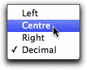
You should always choose Decimal alignment for numeric data.On some printers, you may need to switch off the Font Substitution option for the printer in order for figures to be correctly aligned.
0.#### (no sep) |
|
|
|
16 |
|---|---|---|---|---|
0.00 (no sep) |
|
|
|
17 |
| 0.0e0 |
|
|
|
18 |
| 0.0xxxxx |
|
|
|
19 |
The dollar and the percent check boxes can be used to include the currency and/or dollar symbol in the formatted number.
If this is set, zero values will show as blanks on the report.
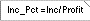
Use these setting to indent the text output in the column by the number of points indicated. This is useful if you have right aligned and left aligned columns adjacent to each other. You can specify both a right and left inset.